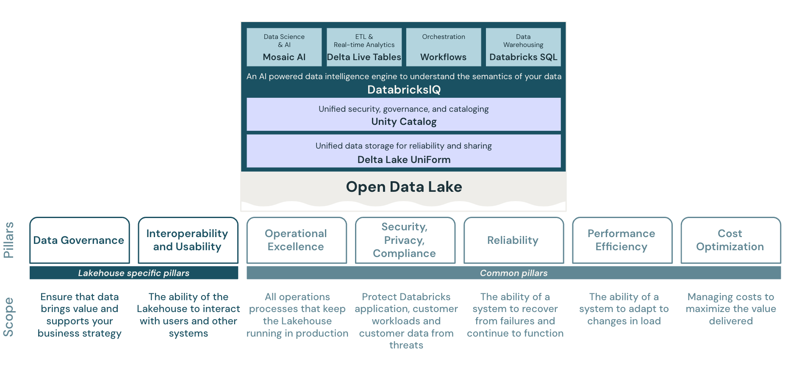
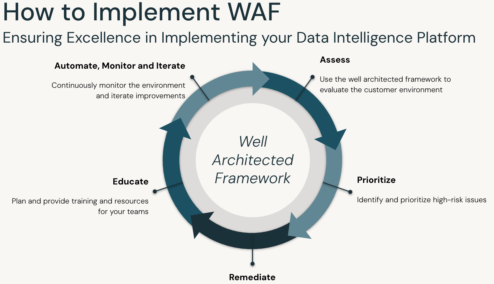

Welcome to the Databricks Well Architected Framework Assessment Tool
Evaluate your Databricks lakehouse architecture against industry best practices and identify opportunities for optimization across seven critical pillars.
About the Well Architected Framework
The Databricks Well Architected Framework (WAF) provides comprehensive guidance for implementing a data lakehouse on the Databricks Data Intelligence Platform. It helps organizations build safe, reliable, efficient, and cost-effective data and AI solutions through structured assessments and continuous improvement cycles.
The Seven Pillars of Excellence
The framework is built on seven fundamental pillars that ensure comprehensive coverage of all critical aspects of your lakehouse architecture:
Data Governance
Ensure data brings value and supports business strategy through proper governance, cataloging, and metadata management.
Interoperability & Usability
Enable seamless interaction with users and systems through open standards and intuitive interfaces.
Operational Excellence
Maintain production systems efficiently with robust monitoring, automation, and incident management.
Security, Privacy & Compliance
Protect data and systems from threats while meeting regulatory requirements and privacy standards.
Reliability
Recover from failures and continue functioning through redundancy, backup strategies, and disaster recovery.
Performance Efficiency
Optimize resource usage and adapt to changing demands with efficient data processing and query optimization.
Cost Optimization
Maximize business value while minimizing costs through resource right-sizing and usage optimization.
Lakehouse Architecture
Built on open standards and unified governance, the Databricks lakehouse architecture combines the best of data lakes and data warehouses:

The lakehouse stack featuring Unity Catalog for unified governance, Delta Lake UniForm for open standards, and the Seven Pillars of the Well Architected Framework
Continuous Improvement Cycle
The WAF follows a structured continuous improvement approach to ensure your lakehouse architecture evolves with best practices and organizational needs:

The continuous improvement cycle: Assess → Prioritize → Remediate → Educate → Automate, Monitor & Iterate
Platform Documentation
Access comprehensive lakehouse architecture documentation specific to your cloud platform:
Ready to Get Started?
Begin your Well Architected Framework assessment and discover insights to optimize your Databricks lakehouse.
No Assessment Selected
Create a new assessment or load an existing one to get started.